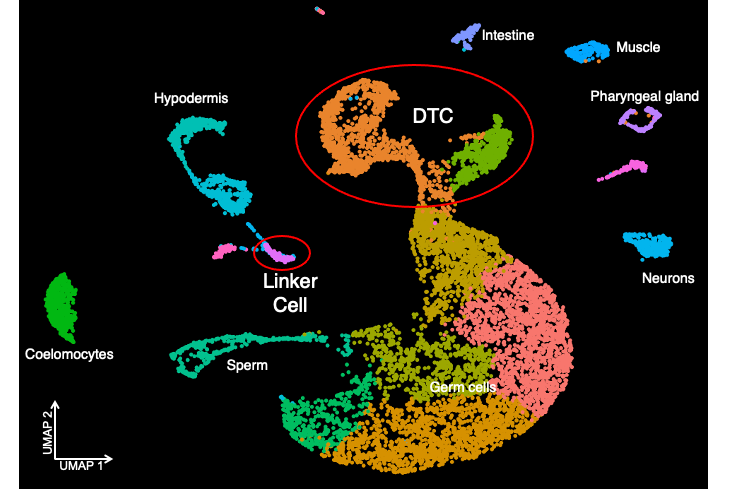

01
Linker cell and DTC scRNA-seq dataset
Single cell RNA-sequencing of two migrating cell types in C. elegans: the male linker cell and the hermaphrodite distal tip cells.

Single cell RNA-sequencing of two migrating cell types in C. elegans: the male linker cell and the hermaphrodite distal tip cells.